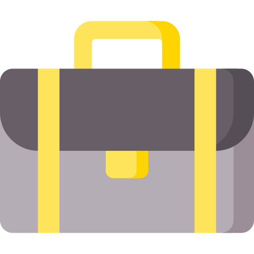

Expériences:
- 2020 : Agent d'entretien au Collège de L'Europe à Ardres (stagiaire)
- 2020 : Animateur en maison de quartier éveil numérique (stagiaire)
- 2019 : Planificateur TEM pour ASCO gestion de projet au CNPE de Chinon
- 2016 : Agent de service, gardiennage de sas et sortie de zone contrôlée, gardiennage zone FME pour SAMSIC au CNPE de Gravelines
- 2013 : Agent de maintenance au service assainissement des eaux de la CUD (stagiaire)
- 2010 : Agent de libre service et préparateur de commande BigMat STB (stagiaire)
